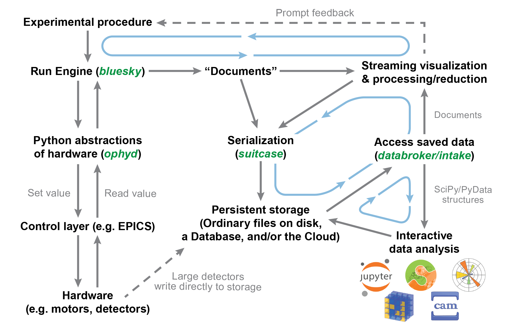
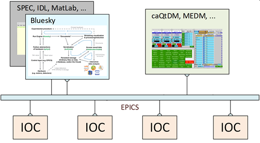

Bluesky: Brief Introduction#
Bluesky is a Python framework for instrument control & scientific data acquisition, primarily using EPICS.
(Based on a 2021 slide set prepared for the APS Spectroscopy SIG. Other slide sets are available in ANL’s Box folder.)
Abstract
The Bluesky framework provides Python tools for coordinating measurement steps with data acquisition, analysis, and visualization. For data acquisition, it relies on the popular PyEpics library to connect with the instrument control system. For measurements, it provides a set of standard scanning plans as well as provisions to customize or build your own as needs dictate. Visualization for data acquisition is provided through the matplotlib package and Qt while for analysis, packages such as dask, pandas, and others may be used. Data may be exported in a variety of formats with existing tools or into a different format with your own tool. As used at APS, primary data will be stored in a mongodb database for each instrument with Python tools available for retrieval and catalogging.Motivation#
Improve the experimental efficiency of our users.
A huge part of my job is to set these experiments up for success. (Mary Upton, Physicist, APS Instrument Scientist)
EPICS for instrument controls
Bluesky framework:
sequence the X-ray measurements
collect & coordinate data & metadata
access the data after the measurement for analysis
export the data for other tools or offsite use
Principal parts of The Bluesky framework#

-
Orchestrate the scan
Collect & publish data (plot, table, database, file, socket, …)
Basic data visualization
Handle interruptions (no beam, shutter closed, …)
-
Rich search & access to saved data
Separates data from file format
Discoverable data repositories
-
Various Python tools for use with Bluesky at the APS
synApps Devices & APS-specific Devices (undulator, shutter, …)
APS storage ring
currentInformation from APS Proposal and ESAF databases
-
Database (used by databroker) that stores lightweight (non-image) data. metadata, and references to image files.
Data is stored as documents in JSON (text) format.
-
Data access service (uses databroker, URLs, or file systems) for stored (not live) data.
Call by URI, Python, or command line interfaces.
-
Provides the bluesky
RunEngineas a network service.Use Python or JSON interface with ZMQ or command line.
info |
web address |
|---|---|
Docs |
https://blueskyproject.io/ |
Code |
https://github.com/bluesky/ |
|
https://github.com/BCDA-APS/apstools/ |
How does it work?#
Measurements are controlled by the
bluesky.RunEngineas plansPlans are defined by Python functions
Collected data is published:
databroker for storage
Subscribers (callbacks) for visualization, export, and other
Use standard plans or construct your own custom plans
Embed a plan inside another plan (such as this hypothetical):
step scan temperature T through a range
scan $\theta$-$2\theta$ at every T
Moveable Devices or Signals can be scanned
Readable Devices or Signals can be detectors
Devices and Signals are defined by Python classes
Signals connect with EPICS PVs
Other Signals can be monitored during a measurement
How does Bluesky fit in?#
Bluesky is a user interface for data collection using EPICS. It can also interface with other controls (such as native Python, LabView, network sockets) but these interfaces will require effort to implement.

Works with existing EPICS controls (IOCs & PVs)
even area detectors
Coordinates data collection and analysis with X-ray experiments
Works along with existing GUIs
Pre-built and customized measurement procedures
Delivers data and metadata for your analysis processes